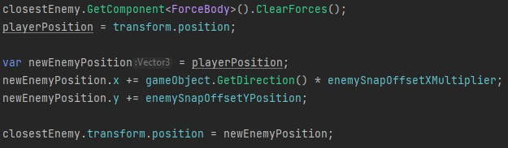
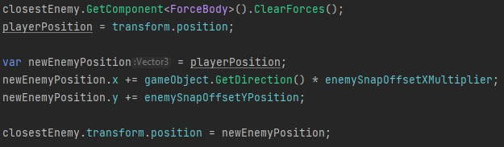
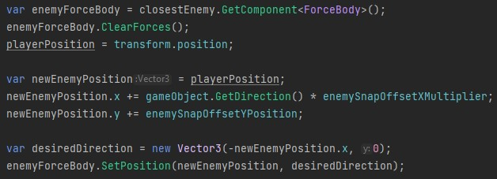
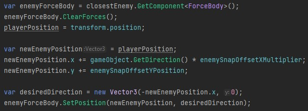

De game is een 2.5D Metroidvania Couch Co-op gebaaseerd op de cartoons van 80's Sci-Fi.
Het is een game dat gaat om momentem. Heb aan het zelfde project ook gewerkt aan Extensive Playermovement en Pickup System.
Wat interessant is om te vertellen, is dat deze game zijn eigen force systeem heeft.
Wat nog interessanter is dat ik het heb uitgebreid, scroll naar benden voor meer informatie.
Wat ik weer heb gedaan is voor 1 sprint scrum master zijn, deze keer voor 3 weken.
Wat ik vooral geleerd heb is dat ik dacht dat ik veel van de taal C# wist, toen ontdekte ik nog meer dingen dat je kan doen mee.
De git repository is op privé!
Het wordt een commerciële game.
Wanneer je de player z’n positie hard verplaatst, dan kan je in een muur of in de grond vast komen.
Met deze systeem extensie kom je altijd naast of op de muur of grond.
Hier gebruik ik veel technische onderdelen van de taal C#.
Tuple, een return funcite maar dan moet je meerdere dingen returnen.
Nullable, als je een return functie heb dan mag het ook null zijn, zodat je geen onnodige data hoef te geven, zoals een Vector3.Zero.
Heb ook veel gewerkt met raycasts en de list van wat er wordt geraakt.
Hier een voorbeeld van hoe het gebruikt kan worden.
De drones kunnen geslagen worden en gaan vast zitten in de muur. Met deze functie gaan ze naast de muur worden gezet.
Ze stuiteren gelijk weg vanwege een state van de drone.
Before:
 

After:
 
